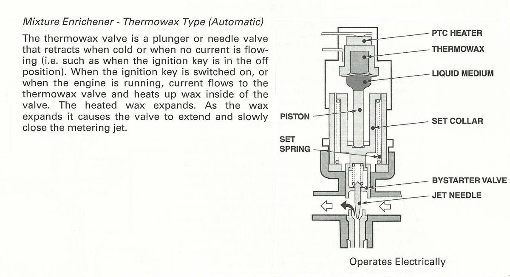
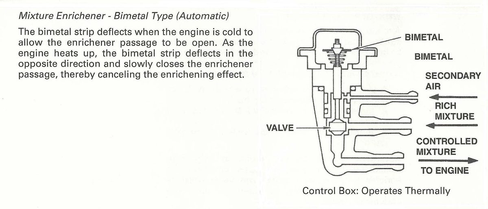

Some carburettors, mostly on scooters, have no choke lever or cable. A small device on the carburettor opens the starter circuit by itself when the engine is cold and closes it as the engine warms. Two kinds are common. A thermowax type has an electric heater that warms a wax element. A bimetal type has a metal strip that bends with heat. The details differ by model, so use the manual for values.
Safety
- Work on a cool engine and keep fuel and sparks apart.
- Disconnect the battery before unplugging any wiring.
Steps
- Find the device on the carburettor. A thermowax type has a wire connector. Note how the valve or plunger sits when cold.
- Cold engine, key off: the valve is retracted, so the starter circuit is open and the engine can get extra fuel for starting.
- Look at the connector for corrosion or a loose pin. A broken heater feed keeps the starter circuit open and the engine runs rich when warm.
- With the key on, check that the heater gets power, and read its resistance with the multimeter. Compare with the value in the scooter manual.
- Start the engine and let it warm. On a thermowax type the heater warms the wax, the wax expands and the valve slowly closes the starter jet.
- After warm-up the idle should drop and settle. If it stays fast or rich, the starter circuit is still open.
- If the heater reads out of range or the valve does not move, replace the device as the manual says.
Check your work
- Easy cold start, idle drops as the engine warms, and no black smoke or rich smell when warm.